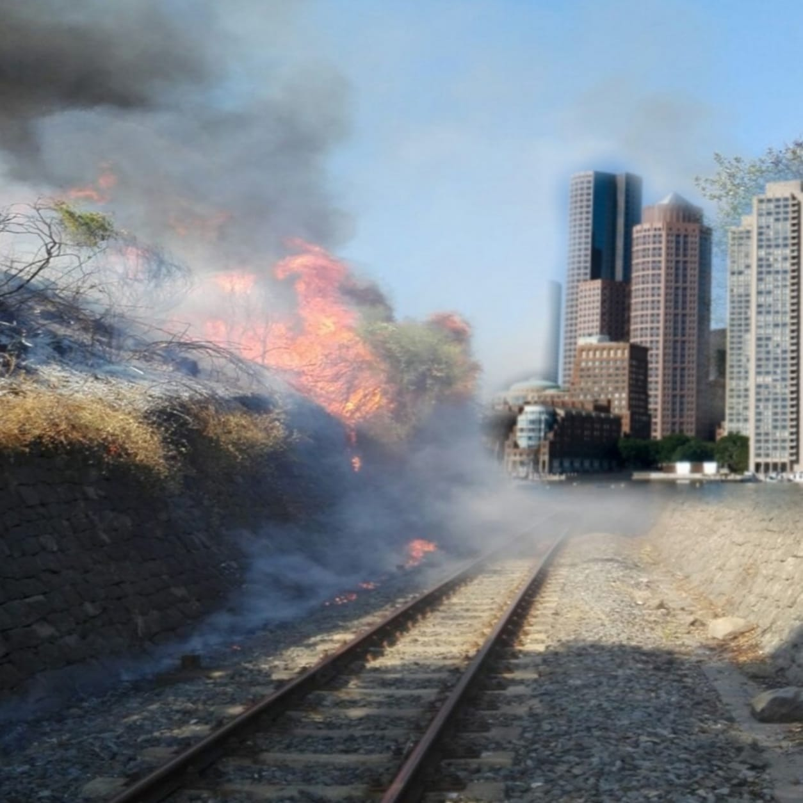

Ancora brutte notizie per la metropoli, un grave incendio travolge
il tratto ferroviario che porta a Spoleto.
Appena avvisati, i pompieri si sono recati sul posto intorno alle 14:30,
ma secondo le fonti locali, la situazione è rimasta invariata durante le ore a
seguire.
Anche le task force di Baiano sono intervenute, ma l'organizzazione è stata
fortemente ostacolate dall'assenza del CEO Ridolfi che, lontano dal bunker no
ha potuto coordinare le azioni. Si è così espresso:

«Eh sempre così succede, quando il padrone abbandona il proprio
territorio iniziano a sorgere i primi problemi. Purtroppo io non
mi posso occupare di tutto, per questo al mio ritorno farò eleggere
alcune persone il quale compito sarà mantenere l'ordine pubblico e
privato a Baiano»
Il problema sembra essere derivato dal passaggio irregolare di uno dei
treni
non maglev sulla rotaia, probabilmente con un freno bloccato. Per questo
il magnate ha chiamato all'appello un suo fidato amico esperto in materia,
Lorenzo Tolomei, che ha messo in campo la sua esperienza per fare luce sul caso.
Clicca per la deposizione
Essendo in periodo estivo non tutti di certo si sono messi al lavoro.
Un esempio il generale Natali, che in villeggiatura, con una lettera si è lamentato della
catastrofe, che ha interrotto il suo meritato riposo.
«Eccu no... io non ne posso più de stu cazzo de Baiano...
Baiano qui, Baiano lì, Baiano de qua e pu so sempre loro a fa li danni.
Ma no a sapete l'urdima??
Du o tre jorni fa... Saro state e 4, ietti a governa e bestie e arvenennetti a casa,
mo che stio co u motorino, decidetti de ji a fa un giretto su na strada qui pe torno.
E fino de qui tuttu ppostu... mbocco la pe sta strada, tempu de fa 200 metri
e me paria de sta ju l'inferno, le fiamme, le schioppettate, lu fumeee, na puzza de
bruciaticciu che appestava. Dittu ciò fo un fugone che, dico n'diavulu, e me artorno,
rrio li casa e lu fume nco se vidia, ma a cosa più bella è che cio tutti frignitti
niri dentro a piscina che discurrenno co Palmiro scopritti che era a paja de
u paiaro de Punziano. Ma veneno a lu punto che scotta e tralascianno la paura, li
corbi e le madonne pe arpuli l'acqua... ve consijo de guarda bene lu nome dellu
proprietario della paglia bruciata... un cristiano noto pe certe schioppettate che
tirò a Ridolfi. Ma fermeteve che non finisce qui che je pija un
corbu a lu foco e a baiano... dice che stu putiferio è corba delli freni de n treno
de baiano che onno scintillato... Quinni ecco che se capisce subbito se come è annata
e è pe questo che so incazzato fracio
Quillu pidocchiu de Ridolfi pe arfasse della schioppettata ha appicciato stu focu
mettenno mano su li freni e ecco fatto che a paja de "u poru Ponziano" è jita persa.
Mo io sto a scrive a vui giornale "Webbe" perché Ponziano arvole i sordi della paja,
io pe lu disturbu de le madonne e zio mia pe l'orzetta che è jita bruciata pure quella.
Aspettanno na risposta.
Tanti saluti da Colle. Ce vedemo.